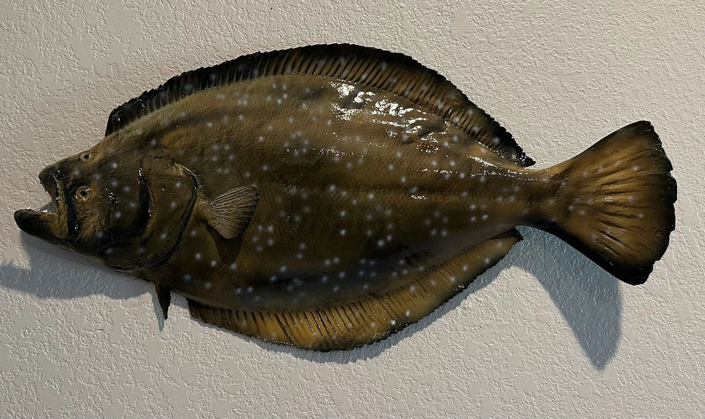
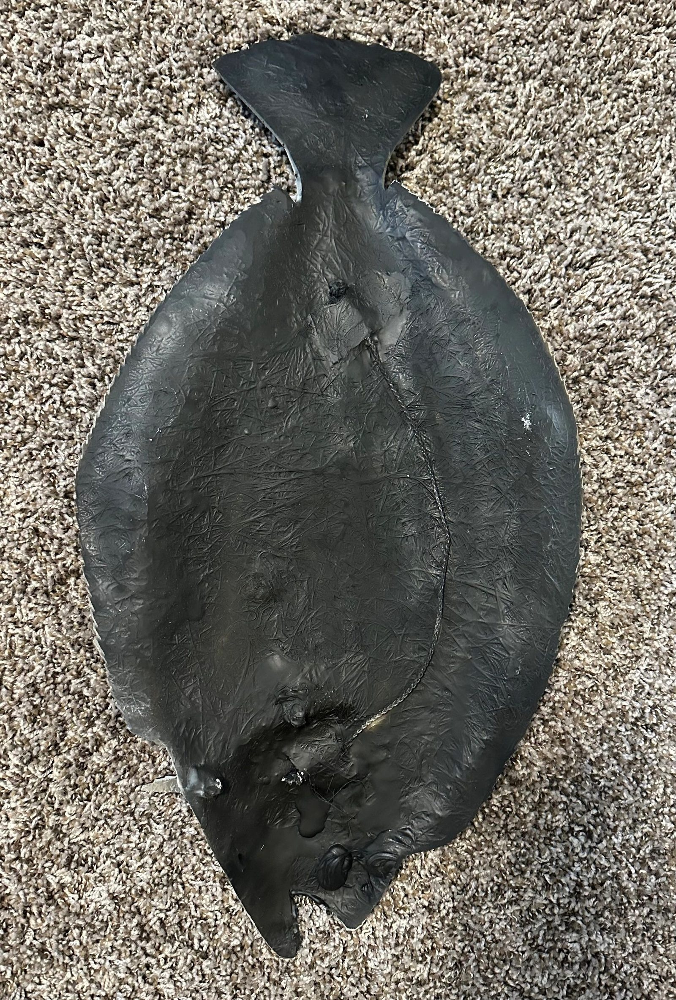

Front
Full color, detail, and finish — the mount you see from the room.

Same wall look as a full mount — built so you can hang a beautiful fish without paying for the side nobody sees.
At South Texas Charters we make fiberglass fish replicas affordable enough to put on your wall. We started producing half mounts and found we liked them just as much as a full mount — and they cut the price for customers.
A half mount is finished and painted on the front (the side you see). The back is unfinished and painted black — the side that sits against the wall. They hang clean, look sharp, and still show the fish the way you remember it.
Full color, detail, and finish — the mount you see from the room.

Flat and painted black. Unseen once it’s hung.
